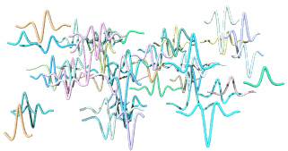
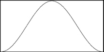
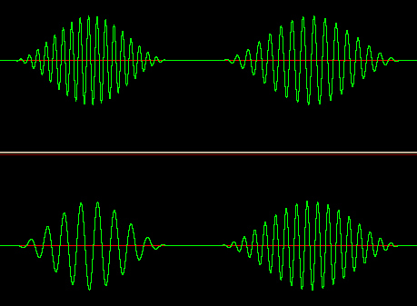

| Columns
Synthesis Departments |
Granular Synthesis Hans Mikelson granula.orc granula.sco limit.wav (398K) Like a Field of Crickets This article describes how to do simple granular synthesis with Csound. The idea that sounds can be made up of a large number of sound particles is one of the key concepts of granular synthesis. Some examples of granular sounds are the chirping of a chorus of crickets, the rustling of leaves in the wind, a flowing stream of water, traffic on a busy highway and a room full of people talking. In these examples the individual sounds seem to become merged into a single continuous sound. Between Sine and Noise In Csound granular synthesis is accomplished by generating a large number of sound events. Each sound event is a pulse of sound which has been shaped by a short envelope. One can think of a pure sine wave as having an infinite envelope and a single frequency. As the envelope becomes smaller the frequency of the sound becomes broader until an infinitesimal envelope yields all frequencies or noise. Granular synthesis is typically considered as the region somewhere between the two extremes where the broadening of the frequency band becomes noticable to the listener.  Figure 1. A typical grain envelope. Figure 1 shows a typical grain envelope in this case a hanning window. This can be easily generated using GEN 20. The duration of each grain is typically between .005 to .1 seconds. Interesting results can be obtained with a sine wave although any waveform may be used. The Csound opcode grain allows for a random amplitude and pitch to be selected for each grain based on a base amplitude and frequency. The envelope duration and grain density are also specified.  Figure 2. Some typical grains generated with grain. Granular Sounds The first example score section demonstrates several different envelope durations. The final event uses a different waveform. f1 0 65536 10 1 ; Sine wave f2 0 65536 20 2 ; Hanning envelope f3 0 65536 10 1 .1 .2 .4 .1 ; Waveform 1 ; Sta Dur Amp Pitch Arnd PRnd Dns Fn RmpIn RmpOut GrnDur i1 0 1 16000 8.00 0 13 10 1 .1 .1 20 i1 + 1 16000 8.00 0 13 20 1 .1 .1 22 i1 . 1 16000 8.00 0 13 80 1 .1 .1 23 i1 . 1 16000 8.00 .0001 10 10 3 .1 .1 20 The second example score section is a short composition using only instrument 1. The granular sounds fade in and out slowly using a variety of waveforms. This results in a series of rich evolving pads. Granular Samples Samples can also be used as waveforms. The second instrument in the example orchestra generates granular sounds based on input samples. When I first tried to use samples as waveforms I was confused at the high pitched noisy result. The problem was that I had specified audio frequencies such as 440 hz for the grain base frequency. The grain opcode would then loop through the entire table 440 times each second rather than once over the duration of the sample. The following equation can be used to calculate the frequency to use for grain if you want the frequency of the sample to remain unchanged. i1 = sr/ftlen(ifn) Sometimes it really pays to read the manual. Bugs? In Csound? Unfortunately grain has a problem that can result in high pitched noise under certain conditions. This can be fixed by setting sr=kr but since the grain opcode is already very computationally intensive this is a painful solution. This may be fixed in an upcoming release of Csound. Just Getting Started There are several other opcodes in Csound for granular synthesis including fog and granule. In addition programs can be written to generate granular scores. Besides pitch and amplitude other instrument parameters can be varied such as filter cut-off frequency, resonance, frequency modulation depth and waveform. Chaotic or fractal equations can be used to vary the instrument parameters by using score generating programs. Links and Further Reading Duesenberry, John. November 1999. "Square One: A World in a Grain of Sound." Electronic Musician. Intertec Publishing. Roads, Curtis. June 1997. "Granular Synthesis." Keyboard. Miller Freeman. http://www.academy.qut.edu.au/music/newmedia/Granular_Synthesis/granSynth.htm Granular synthesis tutorial by Leon Zadorin. http://www.academy.qut.edu.au/music/newmedia/Granular_Synthesis/CompGran.htm Composing with Granular Synthesis by Leon Zadorin. http://roaring.ccm.uc.edu/mara/papers/ Some links to papers on granular synthesis can be found here. http://wwwvms.utexas.edu/~fredrics/granular.html Granular synthesis Csound example by Howard Fredrics |